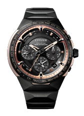
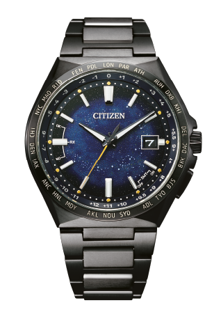

シチズン チタニウム技術
50周年記念フェア
2021年1月2日(土)～2021年1月31日(日)まで
シチズン チタニウム技術50周年フェアを
開催いたします。
期間中お買い上げのお客様には
ノベルティを差し上げます。
是非、この機会をご利用ください。
心よりご来店をお待ちしております。
※プレゼントは無くなり次第終了となります。
▶︎ フェア開催店舗リスト
チタニウム技術50年の研鑚
その結晶と新たな可能性がここに。
キズに強く、軽く、サビにくく、肌にやさしく、しかも美しい。シチズンの独自素材＂スーパーチタニウムＴＭ＂をまとったチタニウム技術50周年を記念するフラッグシップモデルと、ブランドを横断するコズミックブルー コレクションが登場。それぞれ「宇宙」をイメージしたデザインで、宇宙開発での活用が予定されているスーパーチタニウムＴＭ のさらなる進化への期待が込められています。
シチズン チタニウム技術50周年記念フェア
2021年1月2日(土)～2021年1月31日(日)まで
シチズン チタニウム技術50周年フェアを開催いたします。
期間中お買い上げのお客様には「スパイラルリングノート」を差し上げます。
是非、この機会をご利用ください。心よりご来店をお待ちしております。
※プレゼントは無くなり次第終了となります。
▶︎ フェア開催店舗リスト
チタニウム技術50年の研鑚
その結晶と新たな可能性がここに。
キズに強く、軽く、サビにくく、肌にやさしく、しかも美しい。
シチズンの独自素材＂スーパーチタニウムＴＭ＂をまとった
チタニウム技術50周年を記念するフラッグシップモデルと、
ブランドを横断するコズミックブルー コレクションが登場。
それぞれ「宇宙」をイメージしたデザインで、
宇宙開発での活用が予定されているスーパーチタニウムＴＭ の
さらなる進化への期待が込められています。
シチズン独自のチタニウム加工技術と表面硬化技術によってつくられる、
キズに強く、軽く、肌にやさしく、
サビにくい独自素材
「スーパーチタニウム™」

50年の結晶。新たなる革新。
シチズン チタニウム技術50周年記念
フラッグシップモデル
SATELLITE WAVE GPS F950
シチズンが磨き続けてきたチタニウム技術、その粋を結集した世界で550本の限定モデル。
より強く、より美しく、より心地よい腕時計へ。
チタニウムと向き合い続けてきた、シチズンだからこそ辿り着いた極致。
スーパーチタニウム™だからこそ実現できた、「輝き」「色合い」そして「細部の繊細な仕上げ」。
シチズンが誇るチタニウム加工技術と表面硬化技術（デュラテクト）によって生み出された美しさがここに。
世界数量限定、シリアルナンバー入りの特別な1本です。
 精緻に計算し尽くされた
精緻に計算し尽くされた
2体構造のケース
 キレのある造形美を創り出す
キレのある造形美を創り出す
シャープなエッジ
 2つのデュラテクトによる、
2つのデュラテクトによる、
特別なカラーリング

CC4025-82E
エコ・ドライブGPS衛星電波時計 F950
［世界限定 550本］
¥550,000（税込）
（税抜価格 ¥500,000）

宇宙に挑む、可能性をひらく。
シチズン チタニウム技術50周年記念限定モデル
コズミックブルー コレクション
無限の可能性を秘めた「宇宙」がテーマのスーパーチタニウムTMをまとった、
ブランドを横断する限定4モデルが誕生。
銀河をイメージした鮮やかなブルーの文字板やデユラテクトDLC（ブラック）により
艶やかなダークグレーなどコズミックブルーの名の通り、
「宇宙」をテーマとしたデザインが、スーパーチタニウムTMの無限の可能性を物語ります。
各モデル数量限定、シリアルナンバー入りの特別な1本です。
宇宙の壮大さを印象づける青と濃紺のグラデーション。
ローマ数字がエレガントな
エコ・ドライブGPS衛星電波時計。
CC4015-86L
エコ・ドライブ
GPS衛星電波時計 F950
［世界限定 1,300本］
¥286,000（税込）
（税抜価格 ¥260,000）
広い文字板に、放射状にひろがる宇宙空間。
無限の可能性を宿した特別なアテッサ。

CB0219-50L
エコ・ドライブ電波時計
［世界限定 2,200本］
¥110,000（税込）
（税抜価格 ¥100,000）

銀河のごとくラメがきらめくエレガントなエクシード。
サファイアガラスの外周部は、
宇宙の神秘現象「黄道光」を表現。
AS7164-99L
エコ・ドライブ電波時計
［限定 700本］
¥209,000（税込）
（税抜価格 ¥190,000
奥深く繊細なきらめきを放つ星屑のパターン。
色あせない黒が美しい
艶やかなダークグレーが輝くクロスシー。
ES9466-57L
エコ・ドライブ電波時計
［世界限定 1,500本］
¥110,000（税込）
（税抜価格 ¥100,000）
 CC4015-86L
CC4015-86L
エコ・ドライブ
GPS衛星電波時計 F950
［世界限定 1,300本］
¥286,000（税込）
（税抜価格 ¥260,000）
CB0219-50L
エコ・ドライブ電波時計
［世界限定 2,200本］
¥110,000（税込）
（税抜価格 ¥100,000）
 AS7164-99L
AS7164-99L
エコ・ドライブ電波時計
［限定 700本］
¥209,000（税込）
（税抜価格 ¥190,000
ES9466-57L
エコ・ドライブ電波時計
［世界限定 1,500本］
¥110,000（税込）
（税抜価格 ¥100,000）
シチズン チタニウム技術
50周年記念フェア
2021年1月2日(土)～2021年1月31日(日)まで
シチズン チタニウム技術50周年記念フェアを開催いたします。
フェア期間中お買い上げのお客様にはノベルティを差し上げます。
是非、この機会をご利用ください。心よりご来店をお待ちしております。
※ノベルティは無くなり次第終了となります。
フェア開催店舗リスト
CITIZEN FLAGSHIP STORE TOKYO
東京都中央区銀座6-10-1 GINZA SIX1F
03-6263-9987
CITIZEN FLAGSHIP STORE OSAKA
大阪府大阪市中央区心斎橋筋1丁目1番5号
06-4708-8508
大丸 札幌店 5階 時計売場
北海道札幌市中央区北5条西4-7
011-828-1111
丸井今井 札幌本店 一条館8階 時計
北海道札幌市中央区南1条西2-11
011-205-2575
金正堂本店 弘前店
青森県弘前市土手町45-1
0172-34-3711
道又時計店
岩手県盛岡市大通3-1-18
019-651-1234
三原堂
宮城県仙台市青葉区中央2-5-2
022-222-2028
タケカワ G-TIME店
栃木県宇都宮市江野町5-8
028-651-0328
タニダ 八木橋店
埼玉県熊谷市仲町74 八木橋百貨店5階
048-525-5470
そごう 千葉店 4階 時計サロン
千葉県千葉市中央区新町1000
043-245-8365
東武百貨店 船橋店 5階4番地 時計サロン
千葉県船橋市本町7-1-1
047-425-2211
大丸 東京店 10階 時計サロン
東京都千代田区丸の内1-9-1
03-3212-8011
日新堂 銀座本店
東京都中央区銀座7-9-13
03-3571-5611
京王百貨店 新宿店 6階 時計売場
東京都新宿区西新宿1-1-4
03-3342-2111
東武百貨店 池袋店 6階10番地 時計サロン
東京都豊島区西池袋1-1-25
03-5951-8272
エルサカエ 富山総本店
富山県富山市奥田町3-14
076-431-3200
ながの東急百貨店 別館シェルシェ 4階時計売場
長野県長野市南千歳1-1-1
0262-26-3608
安心堂 沼津店
静岡県沼津市三枚橋472-2
055-925-8100
ジェイアール名古屋タカシマヤ 10階 時計サロン
愛知県名古屋市中村区名駅1-1-4
052-566-8423
松坂屋 名古屋店 北館5階 時計サロン
愛知県名古屋市中区栄3-16-1
052-264-2694
サカイ 本店
愛知県江南市古知野町広見10
0587-56-2847
大丸 京都店 6階 時計サロン
京都府京都市下京区四条通高倉西入立売西町79
075-211-8111
髙島屋京都店 5階 時計サロン
京都府京都市下京区四条通河原町西入真町52
075-221-8811
ジェイアール京都伊勢丹 9階=時計
京都府京都市下京区烏丸通塩小路下ル東塩小路町
075-352-1111
大丸 梅田店 11階 時計売場
大阪府大阪市北区梅田3-1-1
06-6343-1231
髙島屋大阪店 5階 タカシマヤ ウオッチメゾン
(スイスホテル南海大阪5階）
大阪府大阪市中央区難波5-1-5
06-6631-1101
大丸 心斎橋店 本館6階
大阪府大阪市中央区心斎橋筋1-7-1
06-6271-1231
あべのハルカス 近鉄本店 タワー館11階 時計サロン
大阪府大阪市阿倍野区阿倍野筋1-1-43
06-6624-1111
大丸 神戸店 8階 時計サロン
兵庫県神戸市中央区明石町40
078-331-8121
岡山 天満屋 ウォッチギャラリー 2階
岡山県岡山市北区表町1-11-38 ザ・コートヤード表町
086-231-7764
そごう 広島店 本館8階 時計サロン
広島県広島市中区基町6-27
082-512-7344
大丸 下関店 4階 wrist gallery Tempo
山口県下関市竹崎町4-4-10
083-232-1111
ハラダ
徳島県徳島市東新町1-21-1
088-622-6872
小倉 井筒屋 本館2階 時計サロン
福岡県北九州市小倉北区船場町1-1
093-522-2529
大丸 福岡天神店 東館エルガーラ4階 時計売場
福岡県福岡市中央区天神1-4-1
092-712-8181
博多阪急 M3階 ウォッチギャラリー
福岡県福岡市博多区博多駅中央街1-1
092-461-1381
鶴屋百貨店 東館5階 時計売場
熊本県熊本市中央区手取本町6-1
096-327-3650
山形屋 ウォッチギャラリー
鹿児島県鹿児島市金生町3番1号
099-227-6270
日髙本店 プロショップ
宮崎県宮崎市橘通東3-4-6
0985-26-1102